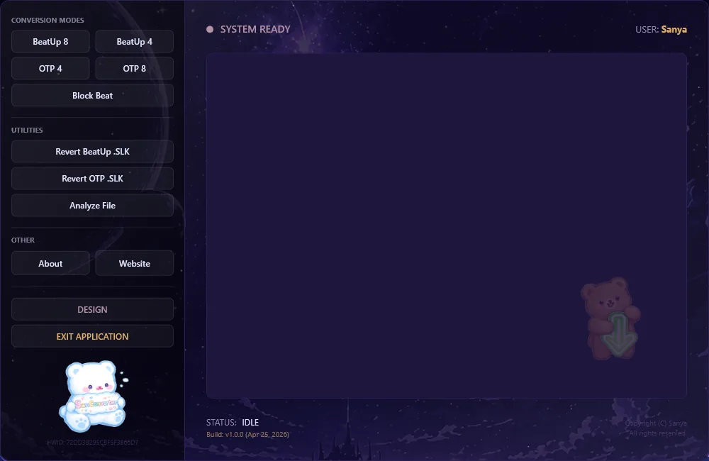

Audio & Timing
Detect true BPM, align Measure 0 offset to the millisecond, normalize loudness to −8.0 LUFS, and encode clean Vorbis tracks.
CAT. 2026 · Sanya Workshop Private Software Suite
Ten private Windows applications built in C++17 and C# for audio alignment, multi-mode chart porting, and frame-accurate playtesting — documented alongside open charting guides for every mode.
01 · Production Pipeline
Every private tool in the suite handles one stage of the charting workflow cleanly, sharing session state and format specifications from prep to playtest.
Detect true BPM, align Measure 0 offset to the millisecond, normalize loudness to −8.0 LUFS, and encode clean Vorbis tracks.
Convert StepMania .SM/.SSC files into client-accurate .SLK charts, generate Ballroom choreography, or revert cleanly to .SSC.
Edit directly against native game rendering across five specialized engines covering BeatUp, One-Two Party, Piano, Guitar, and Shooting Star.
Authenticate hardware-bound accounts, verify encrypted .enc payloads, and synchronize charter profiles across every installed module.
02 · Software Index Private · No Public Downloads
Inspect technical specifications, supported formats, workflows, and changelogs for all ten private Windows builds managed inside the Sanya suite.
 BU · C++17 / D3D11 · Private
BU · C++17 / D3D11 · Private
Rhythm Engine & Editor · Private v1.4.1
Single-timebase 6K rhythm engine with Split View chart editor, Direct3D 11 Flip Model rendering, Auditor Mode CSV revision diffing, and Launcher Profile sync.

SC · C# / .NET 4.8 · PrivateClassic Chart Converter · Private v1.4.4
Converts StepMania .SM and .SSC files to .SLK for Beat Up and One-Two Party, reverts .SLK back to .SSC, and computes stair-aware difficulty ratings.
Core Hub · WPF / .NET 4.8
Hardware-bound desktop hub managing HWID whitelist sign-in, encrypted .enc package deployment, differential updates, and shared .bue_session SSO.
6K Rhythm Engine · C++17 / D3D11
Direct3D 11 Flip Model rendering, integrated waveform editor, Auditor Mode CSV revision diffing, inline .bu management, and Launcher profile sync.
Audio DSP & BPM Prep · C++17 / WPF
Non-causal BPM detection, millisecond Measure 0 offset calibration, −8.0 LUFS normalization, MADI calculation, and batch WAV/FLAC to OGG Vorbis routing.
5-Mode Porting Studio · C# / WPF
Converts .SM/.SSC into BeatUp 4K/8K, OTP 4, Block Beat, and SanPiano with lossless .SLK → .SSC revert and chart integrity checks.
Classic Converter · C# / .NET 4.8
Dedicated Beat Up and One-Two Party converter featuring lane-7 hold/roll state logic, legacy randomizers, SLK duplicate cleanup, and stair-aware level scoring.
Dance Choreography · C# / WPF
Generates Audition Ballroom _s.slk charts across 7 verified move pools with Classic vs. Couple line parity and side-by-side SLK inspection.
Call & Response · C++17
Turn-based One-Two Party rhythm engine with NPC Demo synchronization, GO!/YEAH! Spacebar cues, A26 watermarks, and 1:1 SLK interoperability.
4K & 8K Piano · C++17
1000 FPS CleanUI piano engine with live keyboard recording, Random 4K/8K anti-jack shuffling, Pattern Generator, and 7-column SLK export.
3D Guitar Highway · C++17
Native 3D perspective highway with 192-tick editor, Strum & Bend notes, FlameOut overdrive gauge, v300 CSV export, and Dual-Track AutoPlay.
30-Col XY Canvas · C++17
Free 1024×768 spatial stage workbench with 1–8 MADI chain cadences, geometric shape presets, and lossless 30-column _star.slk export.
03 · Open Documentation Open to Read
While the desktop binaries remain private, every charting guide and printed reference manual is openly readable here — covering key layouts, timing prep, phrasing rules, and playtest checklists.
04 · Studio Colophon
All ten desktop applications in the Sanya workshop are private builds distributed strictly via hardware-locked Engine Launcher accounts. No public downloads, installers, or standalone ZIP packages are offered.